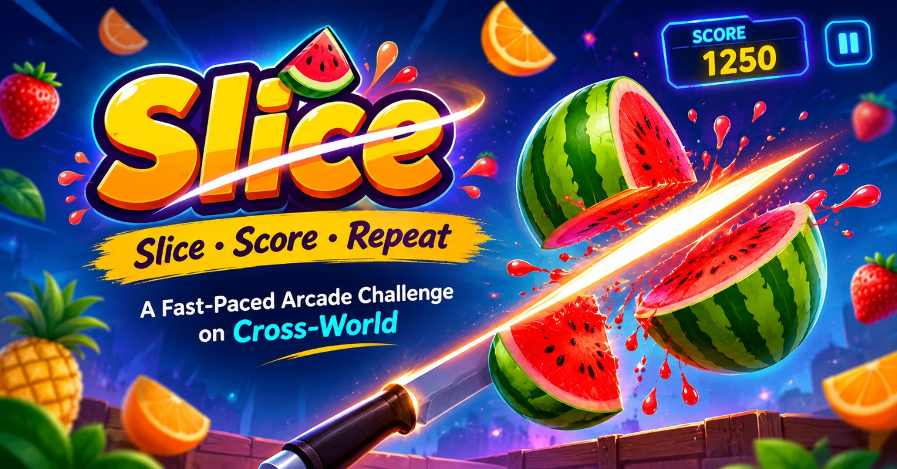

Slice Game Online – A Quick Arcade Challenge
A quick introduction to Slice, its arcade action, and how to get started.

Sometimes the most enjoyable games are the ones you can understand in seconds and keep coming back to play. Slice brings quick arcade entertainment to Crossworld. It is part of a collection designed for players who enjoy interactive browser games without lengthy installations or complicated setup.
Arcade-style games focus on immediate interaction: understand the objective, respond to what appears on screen, and try another round. In Slice, swipe through fruit and vegetables to score while avoiding bombs. The game also offers Classic, Zen, and Frenzy modes, each with its own pace and rules.
Why Play Casual Arcade Games?
- Quick access: Open the game in a browser and get started.
- Simple interaction: Focus on timing and the on-screen action.
- Short sessions: Play a round during a quick break.
- Active gameplay: Stay engaged as the targets appear.
- Replayability: Return for another try or explore a different mode.
How to Get Started with Slice
- Visit the Slice game page.
- Read the on-screen instructions and choose a game mode.
- Swipe through fruit and vegetables to score.
- Keep clear of bombs and watch the changing action.
- Explore the available modes and follow their instructions.
Why Browser Games Are Convenient
Browser games provide convenient access to entertainment across supported devices. Instead of installing a separate application, players can visit a website and explore its games. This makes browser gaming an accessible option for people who enjoy casual entertainment at home, during breaks, or while travelling.
Frequently Asked Questions
What is Slice on Crossworld?
Slice is an arcade game in the Crossworld collection where you swipe through fruit and vegetables while avoiding bombs.
Do I need to install an application?
Crossworld is designed around browser-based gaming. Open the Slice page to access the game.
Can I play Slice on mobile?
You can visit the website using a mobile browser. Check the game page for its controls and compatibility.
Explore Slice Today
Looking for something different from traditional puzzle games? Explore Slice and discover another experience in the Crossworld collection.